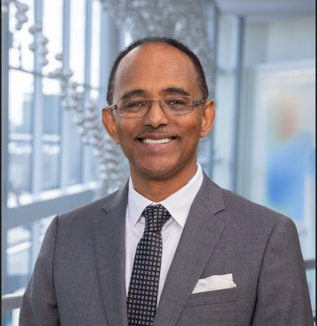
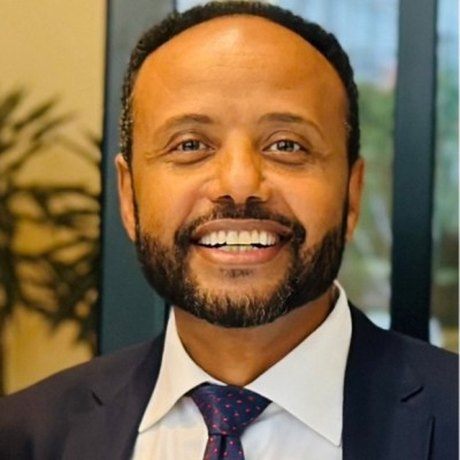
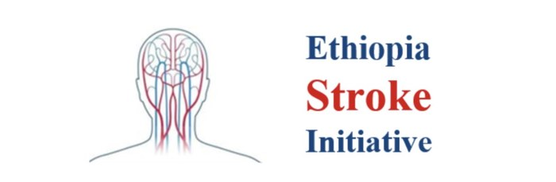

እንኳን ደህና መጡ Welcome to Addis Ababa
Jointly with
1st Ethiopia Stroke Foundation Comprehensive Stroke Symposium
❤ Donate through our partner organizations
More ways to give →adults worldwide will experience a stroke in their lifetime, Africa carries a disproportionate share of that burden.
edition of ASOC, from its virtual launch in 2021 to the continent's premier annual stroke forum.
Ethiopia Stroke Foundation Comprehensive Stroke Symposium, a landmark for stroke care in Ethiopia.
About the Conference
Launched in 2021, the African Stroke Organization Conference is the first dedicated transcontinental annual scientific forum focused on cerebrovascular disease in Africa. It brings together key stakeholders to identify gaps in knowledge, set priorities for stroke prevention, care delivery, and research, and accelerate the translation of research findings into better stroke outcomes across the region.
ASOC 2026 marks a milestone: the conference comes to Addis Ababa, the diplomatic capital of Africa and seat of the African Union, held jointly with the 1st Ethiopia Stroke Foundation Comprehensive Stroke Symposium, under the theme "Enhancing Capacity, Expanding Impact: Stroke Care Transformation in Africa."
The Journey So Far
Every year since 2021, ASOC has convened the continent's stroke community in the first week of November. What began as a virtual forum has grown into Africa's premier annual stroke congress, moving from West to Southern to East Africa, and now to the Horn.
The first-ever transcontinental African stroke conference, and the debut of the Osuntokun Award Lecture, delivered by Prof. Richard Walker.
New frontiers: post-stroke pain, rehabilitation, intracerebral hemorrhage, COVID-19, and AI in stroke diagnosis, with the policy lecture by Dr. Florence Baingana of the WHO African Region.
A hybrid milestone themed "Promoting Brain Health through Stroke Prevention and Control," featuring Hot Topics from the year's major global stroke congresses.
Scientific sessions, scholar presentations, policy dialogues, and career forums, deepening the network across Southern Africa.
Locally driven solutions, cross-border collaboration, and capacity building, uniting professionals, policymakers, survivors, and partners.
Jointly with the 1st Ethiopia Stroke Foundation Comprehensive Stroke Symposium, Enhancing Capacity, Expanding Impact: Stroke Care Transformation in Africa.
Program at a Glance
The detailed scientific program will be announced by the African Stroke Organization. Here is the shape of the week, check the official ASO channels as sessions are confirmed.
Hands-on workshops, capacity-building sessions, and professional development activities ahead of the main scientific sessions.
The core of ASOC, three days of plenaries, scholarly presentations, and networking, traditionally including:
Call for Abstract Submissions
ASOC 2026 invites abstracts for poster or oral presentation. The conference welcomes submissions from researchers at all career stages, and particularly encourages early-career researchers, postdoctoral fellows, residents, graduate students, and trainees to submit and share their work. All accepted abstracts will be published in a peer-reviewed journal.
Abstracts may be submitted in any of the following thirteen categories:
Convened By
The continental body advancing stroke prevention, treatment, and rehabilitation across Africa through research, capacity building, and advocacy, in collaboration with global partners and led primarily by African researchers and clinicians on the continent and in the diaspora.
Learn More →The local host of ASOC 2026, convening its first Comprehensive Stroke Symposium, working to raise stroke awareness, improve access to care, and strengthen stroke systems in Ethiopia while welcoming the continent to Addis Ababa.
Learn More →What ASOC Covers
Hypertension, NCDs, and population-level strategies to stop stroke before it starts.
Stroke units, thrombolysis, and expanding access to time-critical treatment across African health systems.
Neurorehabilitation, community reintegration, and life after stroke.
African-led data on stroke burden, genetics, and outcomes across the continent.
Translating evidence into national health policy and sustainable stroke systems.
Mentorship, scholar presentations, and building the next generation of African stroke researchers.
A Collaborative Initiative
ASOC is convened in collaboration with international scientific organizations, African governments, local universities and hospitals, and patient support groups.
Leadership
ASOC 2026 is chaired jointly by leaders from the African Stroke Organization and the Ethiopia Stroke Foundation, bringing together the continental and Ethiopian sides of the conference.

Conference Chair
African Stroke Organization

Conference Chair
Ethiopia Stroke Foundation
Support Us
ASOC 2026 brings clinicians, researchers, policymakers, and advocates from across Africa together to advance stroke care. Industry sponsorship and individual donations make that work possible, supporting scientific sessions, capacity building, and participation from across the continent.
Organizations interested in supporting the conference, sponsoring sessions, or partnering on workshops and capacity-building activities are warmly invited to get in touch with the event organizers.
Contributions of any size help expand access to stroke care across Africa and support delegates who might otherwise be unable to attend. To donate, please contact the event organizers directly.
Donate Through Our Partner Organizations
ASOC 2026 does not collect donations directly. Contributions are received by our partner organizations, which support the conference and the wider mission of transforming stroke care in Africa.

A US-based non-profit organization supporting ASOC 2026, with a mission to advance stroke research and awareness and to develop comprehensive stroke services nationwide through fellowship training, ensuring world-class care reaches every corner of Ethiopia.
Donate to ESI →Support global stroke training and education through UT Southwestern Medical Center, building stroke care capacity through training programs that extend expertise to clinicians serving communities across Africa.
Donate via UT Southwestern →For sponsorship enquiries, please contact the event organizers:
✉️ asocconference@gmail.com ❤️ See All Ways to GiveStay Connected
This is the ONLY official site for ASOC 2026, including the scientific program, speakers, and participation details. We will provide links to important pages and documents legitimately associated with the conference. Mark your calendar and stay engaged.
#ASOC2026